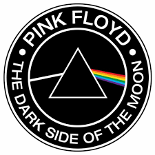

Pink Floyd surgió en 1964 a partir de una banda llamada Sigma 6,8 que cambió su nombre sucesivamente a T-Set, Megadeaths, The Screaming Abdabs, The Architectural Abdabs y The Abdabs. Cuando la banda se separó, algunos de sus miembros (los guitarristas Bob Klose y Roger Waters, el batería Nick Mason y el teclista Rick Wright) formaron una nueva banda llamada Tea Set. Después de un breve tiempo con Chris Dennis como vocalista principal,9 el guitarrista y vocalista Syd Barrett, fan de The Beatles y del rhythm and blues,10 se unió a la banda, con lo que Waters pasó a tocar el bajo.11 En el verano de 1965, Bob Klose se vio forzado a abandonar la banda por las presiones de sus padres y de sus profesores universitarios, y el grupo se convirtió en un cuarteto, con Barrett, Waters, Wright y Mason.12 De este modo, Barrett se reveló como el principal compositor del grupo, y pronto comenzó a escribir nuevas canciones con influencias del rhythm and blues de Bo Diddley,13 aunque la publicación de Eight Miles High de los californianos The Byrds y especialmente el álbum Revolver de sus coterráneos los Beatles en 1966 provocó el auge del rock psicodélico, un género musical en el que Barrett se sentía más a gusto